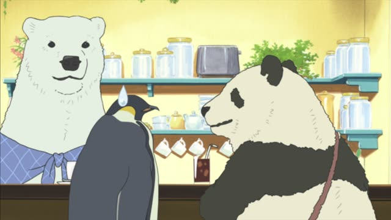
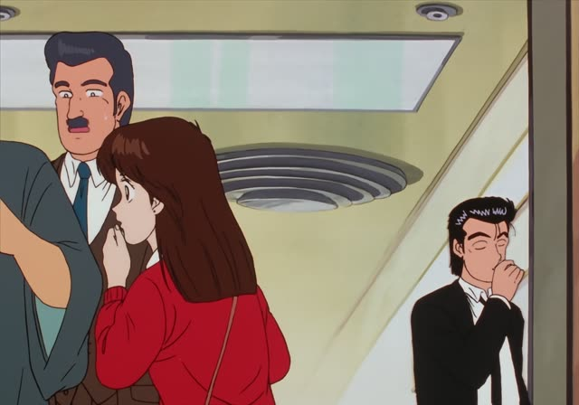
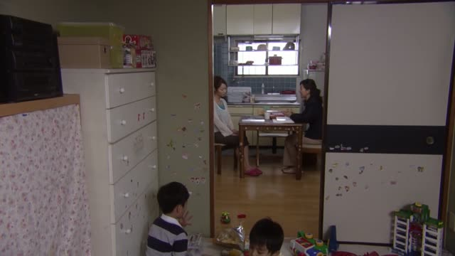
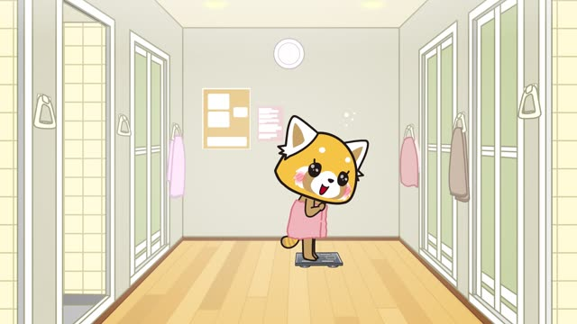
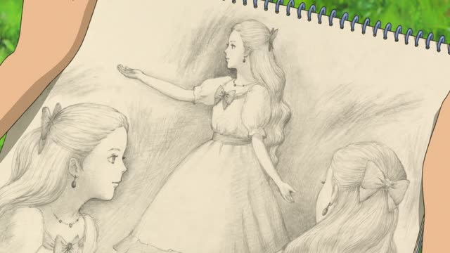

も (With numbers)
Porco Rosso
15人もいますけど、みんな連れてくんですか？
"There are fifteen of them, are you taking them all?"
も right after a number + counter means "as many as, a whole": the speaker finds that number big, more than expected.
It sits where a particle like を or が would go (15人も, not 15人がも). も itself never changes: politeness comes from the end of the sentence.
On this card, fifteen kids is a lot to kidnap, and the pirate is surprised the boss wants all of them.

Shirokuma Cafe · Episode 12
今日なんか、同じ漫画を30回も読み返したんだよ。
"Today I reread the same manga thirty times."
On this card, Panda is so bored that he read one manga thirty whole times, and も shows he knows that's a lot.
Quick Examples
A coworker says you look rested.
昨日、10時間も寝ました。
"I slept a whole ten hours yesterday."
PoliteA friend admires your new bag.
このかばん、5万円もしたんです。
"This bag cost as much as 50,000 yen."
PoliteYour friend finally shows up.
1時間も待ったよ。
"I waited a whole hour!"
CasualWith and without
ビールを3杯飲んだ。
"I had three beers." Just the number.
ビールを10杯も飲んだ。
"I had ten beers!" That's a lot, and you're saying so.
Examples from Media

Oishinbo · Episode 8
あのケチ社長が1億円も寄付してくれたんですか！
"That stingy boss donated a whole hundred million yen?!"
Slam Dunk · Episode 76
3年も続けられません。
"I can't keep this up for three whole years."

1 Litre of Tears · Episode 2
3人もいらっしゃると大変でしょう？
"With three [kids], it must be hard, right?"

Aggretsuko · Season 1, Episode 10
見てください、これ。3キロも落ちてる。
"Look at this! I've lost a whole three kilos."

When Marnie Was There
でも、もう1週間も会ってない。
"But I haven't seen her for a whole week now."
Good Morning Call · Episode 6
くり抜いたの。1時間もかけて。
"I carved them out [the carrots]. It took me a whole hour."
Spirited Away
ここのものを3日も食べれば、においは消えよう。
"Eat the food here for three whole days and the [human] smell will go."
Kotaro Lives Alone · Episode 2
もう2日も入っておらぬ！
"I haven't had a bath for two whole days!"
Further Reading
Tae Kim's Guide to Japanese Grammar
Expressing Amounts · Adding the 「も」 particle to express excessive amounts